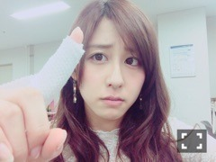
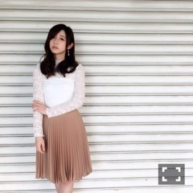
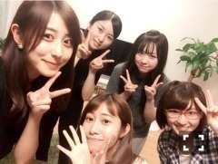

| 2016/05 30 Mon | 斎藤ちはる 母に、「フライパンの持ち手に、熱くないようにプラスチックが施されてるのは何の意味かわかってるの？」と聞かれた大2の春終わりかけ。(´>∀<｀)ゝ |
ちはるーむへようこそ\( ˆoˆ )/

指、火傷しました。
そう。
フライパンの持ち手の根元の、まだプラスチックが施されていない部分を握って。
ジュワッとなりました。
1人で炒飯作ってて、よし！できた！♪
と思ってお皿に盛り付けようとしたら
フライパンの根元を握ってしまった。
本当にジュワッと言いました。
広範囲だけど、
でもそんなに大事にはならなかった！
急いで水で冷やしててよかった〜
保冷剤でずっと冷やしててよかった〜
でも保冷剤を5秒離しただけで激痛が走り
いままでの人生で一番痛かった。
いや、立ち漕ぎしてたブランコから落ちて前の柵に顔面ぶつけた時と同じくらい痛かったかな。
ということでしたので、
今日の握手会は左手は握手できませんでした( ;o; )
来てくれた方戸惑わせてごめんね( ;o; )
いつも片手握手なわけじゃないからね( ;o; )
そんな今日の私服。
4部

レーストップスが REDYAZEL
スカートが WILL SELECTION
このトップス、着心地がよくてこの春夏重宝しそう！！
スカートもずっと座っててもシワにならないし、プリーツの跡が取れないのがすごい！！
4部は少し大人っぽく。
5部
チェックのセットアップで、両方 REDYAZEL！
そしたらなんと、びっくり。
若月と色違いだったの！！
お互いびっくりしちゃった\( ˆoˆ )/
チェックの形は違くてもREDYAZELの同じ形で、
真夏もボトムスを持ってたり、
純奈がタイトスカートバージョンのセットアップを持ってたり、
メンバーに大人気のお洋服です♡
夏っぽくて可愛いよね♪
握手会では、
・じょしらくの話(主にぱっさ〜〜)
・アンダラ東北シリーズの話
・スコーンの話
・火傷の話
・大学の話
・ミステリーハンターの話
などなど、たくさんお話したよ(﹡ˆ ˆ﹡)
物凄く楽しかったなあ♡
握手会、元気を貰える！！
いつもありがとう♡

そういえば最近、またチームくで
さゆんちに集まってパーティしたよ！！
じょしらくの打ち上げパーティ♡
たくさん食べてたくさん笑って
すごく楽しかったな〜！！
だいすき、チームく！
チョーカー大好き女です。
どうもこんにちは。
ほぼ毎日と言っていいほどチョーカーしてるから
純奈に、チョーカー見るとちーちゃん思い出すって言われました。
今度ブログで私の持ってるチョーカー紹介するね\( ˆoˆ )/えへ
ちなみに上の写真のチョーカーはLily Brownのもの。
紐で巻くタイプのチョーカーなんだよ♪
早く火傷治らないかな〜
跡にならないといいな〜
おやすみ。
斎藤ちはる